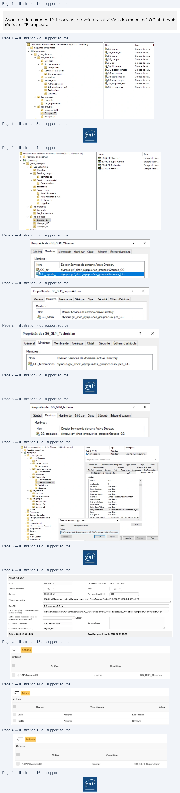
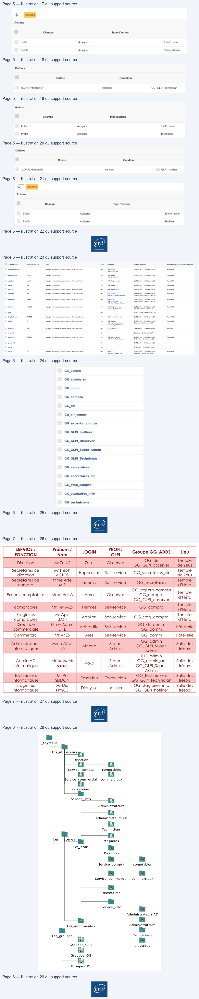
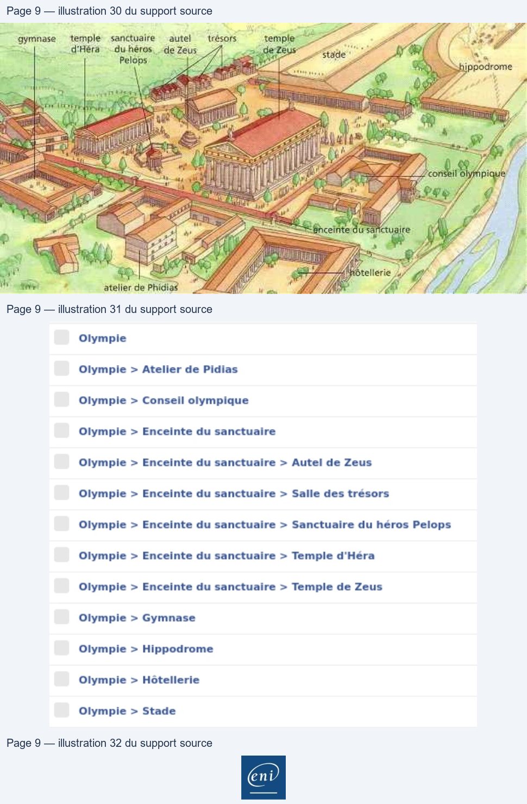

Transcription du document du Drive TSSR. La mise en forme est adaptée au Web ; les compléments IA du portail sont présentés séparément.
GLPI
TP du Module 2 – Authentification AD – Habilitations
Avant de démarrer ce TP, il convient d’avoir suivi les vidéos des modules 1 à 2 et d’avoir
réalisé les TP proposés.
Objectifs
•
Utiliser l’ADDS avec GLPI et utiliser le moteur de règle d’habilitations.
Prérequis
•
AD et GLPI fonctionnels.
Principales tâches à réaliser
Structure AD et utilisateurs
•
Créez les utilisateurs en fonction de l’annexe 1 (cf. fin du document).
•
Créez les groupes globaux suivant le tableau en annexe 1.
o Les groupes globaux dans l’AD
Page 1/9
© ENI – Tous droits réservés
1 Utilisateurs
et ordinateurs Active Directory [CDO1.olympus.gr]
Nom
Type
jl
> I] Requêtes enregistrées
84 GG_admin
Groupe
de séc...
\ ii olympus.gr
82 GG_admin_ad
Groupe de séc...
v (Bl _chez_olympus
°
_
8% GG_comm
Groupe de séc...
veees
82,66_compta
Groupe de séc..
¥ El Senice.compta
8 GG_dir
Groupe de séc...
i comptables
BA Gg_dir_comm
Groupe de séc...
v il Service commercial
BA GG_experts_compta
Groupe de séc...
El Commerciaux
BA GG_secretaires
Groupe de séc...
A secretaires
82 GG_secretaires_dir
Groupe de séc...
v Fi Service_info
RE GG_stag_compta
Groupe de séc...
@) Administrateurs
2, GG_stagiaires_info
Groupe de séc...
Æ Administrateurs_AD
8% GG_techniciens
Groupe de séc...
Æ Techniciens
[1 stagiaires
v Gi les_materiels
Æ Les_ordis
Hi Les_imprimantes
v [il les_groupes
&] Groupes_GLPI
13] Groupes_GG
©) GroupesDL
GLPI
•
Créez les groupes globaux GLPI.
o Les groupes GLPI dans l’AD
o Membres du groupe GG_GLPI_Observer
o Membres du groupe GG_GLPI_Super_Admin
o Membres du groupe GG_GLPI_Technician
Page 2/9
© ENI – Tous droits réservés
E Utilisateurs
et ordinateurs Active Directory [CDO1.olympus.gr]
Nom
Type
> I Requêtes enregistrées
SE GG_GLPL_ Observer
Groupe
de séc..
va comps
8 GG_GLPI Super-Admin
Groupe de séc..
*
[Bi chez olympus
2 GG_GLPL_Technician
Groupe de séc...
v Bi Les_utilisateurs
.
.
i Direction
RE GG_GLP|_hotliner
Groupe de séc...
v Ei Service_compta
(@) comptables
v il Service_commercial
Bi Commerciaux
(1 secretaires
v i Service_info
#1 Administrateurs
i AdministrateursAD
Gl Techniciens
il stagiaires
v [5] les_materiels
i Les_ordis
(&) Les_imprimantes
¥
El les_groupes
131 Groupes_GLPI
Sl Groupes66
i GroupesDL
<
D
Quikin
Propriétés de: GG_GLPI_Observer
?
X
Général
Membres
Membre de
Gérépar
Objet
Sécurité Editeur d'attributs
Membres
:
Nom
Dossier Services de domaine Active Directory
#2,GG_dir
olympus.gr/_chez_olympus/les_groupes/Groupes_GG
GG_experts_…
olympus.gr/_chez_olympus/les_groupes/Groupes_GG
Propriétés de : GG_GLPI_Super-Admin
?
x
Général
Membres
Membrede Gérépar
Objet
Sécurité Editeur d’attributs
Membres
:
Nom
Dossier Services de domaine Active Directory
82,GG_admin
olympus.gr/_chez_olympus/les_groupes/Groupes_GG
Propriétés de: GG_GLPI Technician
?
x
Général
Membres
Membre de
Gérépar
Objet
Sécurité
Editeur d'attibuts
Membres
:
Nom
Dossier Services de domaine Active Directory
FR GG _techniciens olympus.gr/_chez_olympus/les_groupes,Groupes_(G
eni
GLPI
o Membres du groupe GG_GLPI_Hotliner
•
Créez des modèles d’utilisateurs, dans les groupes puis les utilisateurs.
•
Créez ces OU dans l’Active Directory d’Olympus en organisant convenablement sa
structure en fonction de l’annexe 2.
Configuration de GLPI
•
Création d’un compte local d’administration.
o Créez un utilisateur à votre nom disposant des droits maximums sur GLPI (profil
le plus haut). C’est depuis ce compte que seront effectuées toutes les
manipulations qui suivront.
•
Création des lieux en fonction de l’annexe 3.
•
Ajout de l’annuaire LDAP
o Ajoutez le contrôleur de domaine d’Olympus comme source d’authentification LDAP.
o Vous utiliserez le compte « Administrateur » pour l’authentification auprès de
l’AD.
▪
Obtenir le DN de l’administrateur
Page 3/9
© ENI – Tous droits réservés
Propriétés de: GG_GLPI_hotliner
?
x
Général
Membres
Membre de
Gérépar
Objet
Sécurité
Editeur d'attributs
Membres
:
Nom
Dossier Services de domaine Active Directory
&,GG_stagiaires.... olympus.gr/_chez_olympus/les_groupes/Groupes_GG
E Utilisateurs et ordinateurs Active Directory [CD01.olympus.gr]
Nom
Type
Description
> II Requêtes enregistrées
8Deb YANN
Utilisateur
va olympus.gr
8 Administrateur
Utilisateur
Compte d'utilisateur
d'a...
¥ Bi chez olympus
v Hi Les_utilisateurs
nee de nn
;
M Drecion
Propriétés
de : Administrateur
¥ M Sevice compta
Membrede
Répicaion
de mot de passe © Appelentrant | Objet
Sécuité
_ F1 comptables
Environnement
Sessions
Contrôle
à distance
¥ Gil Service commercial
Général
Adresse
Compte
Profil
Téléphones
Organisation | Certficats publés
_
Commerciaux
Prof des services Bureau à distance
COM+
Éditeur d'atrbuts
Bi
secretaires
v Ed Service info
Atrbuts
Bi Administrateurs
‘Attrbut
Valeur
A
:——
countryCode
0
alcena
d8CSPd
<non défini>
.
egiawes
defautClassStore
<non défini>
v M lesmateriels
department
non défini>
@ Les ordis
departmentNumber
<non défini>
_ il Lesimprimantes
description
Compte d utiisateur d'administration
EI les_groupes
desktopProfile
<non défini>
Bi Groupes_GLPI
destinationindicator … <non défini>
{Gl Groupes6G
displayName
<non défini>
Æ1 GroupesDL
displayNamePrintable
<non défini>
> D Buitin
dstinguishedName | CN-Administrateur OU=Administrateurs_AD.(
> D Computers
division
«non défini>
> Bi Domain Controllers
dSASignature
<non déini>
> D ForeignSecurityPrincipals
d5CorPrroagaionD…
11/12/2020 165508 Pers Mad 09/12/Ÿ
> Gi Keys
Éditeur d'attributs de type Chaîne
x
>
(Gl LostAndFound
> Li Managed Service Accounts
Altbut :
distinguishedName
ia
> D Program Data
en
> = oem
(CN=AdministrateurOU=Administreteurs_AD
OU=Service_info,OU=Les| utisateur
sers
à NTDS Quot:
Ez
[ok]
anmuier
>a
uotas
fecer
[ox]
Une
Popiquer
Ade
> (TPM Devices
ent
GLPI
▪
Paramétrage de la liaison AD dans GLPI
Règles d’habilitation
•
Faites en sorte que quand un utilisateur du domaine se connecte sur GLPI, il lui soit
automatiquement attribué le/les profils GLPI sur les bonnes entités du groupe (les bonnes
habilitations).
o Règle d’importation observer
o Règle d’importation Super_Admin
Page 4/9
© ENI – Tous droits réservés
Annuaire LDAP
Nom
MonADDS
Demière modification
2020-12-11 16:59
Serveur par défaut
Oui
+
Actif
Où
+
Serveur
192.168.1.1
Port (par défaut 389) | 389
Fitre de connexion
(&(objectClass=user)(objectCategory=person)(!(userAccountControl:1.2.840.113556.1.4.803:=2)))
da
BaseDN
DC=olympus,DC=ar
DN du compte (pour les connexions
Lam
Login
ceri
2
M
.
L
.
non anonymes)
CN=administrateur,OU=administrateurs_
AD,OU=service info, OU=les_utilisateurs OU=_chez_olympus, DC=olympus,DC=gr
Mot de passe du compte (pour les
Ettacer
connexions non anonymes)
Champ de l'identifiant
samaccountname
Commentaires
Champ de synchronisation i
objectguid
À
Créé le 2020-12-08 14:26
Dernière mise à jour le 2020-12-11 16:59
Ÿ
Actions
Critères
Critère
Condition
(LDAP) MemberOf
contient
GG_GLPI_Observer
Ÿ
Actions
Actions
Champs
Type d'action
Valeur
Entité
Assigner
Entité racine
Profils
Assigner
Observer
Ÿ
Actions
Critères
Critère
Condition
(LDAP) MemberOf
contient
GG_GLPI_Super-Admin

GLPI
o Règle d’importation technicien
o Règle d’importation hotliner
Page 5/9
© ENI – Tous droits réservés
Ÿ
Actions
Actions
Champs
Type d'action
Entité
Assigner
Entité racine
Profils
Assigner
Super-Admin
Critères
Critère
Condition
(LDAP) MemberOf
contient
GG_GLPI_Technician
Actions
Champs
Type d'action
Entité
Assigner
Entité racine
Profils
Assigner
Technician
Critères
Critère
Condition
(LDAP) MemberOf
contient
GG_GLPI_hotliner
N L
Actions
Actions
Champs
Type d'action
Entité
Assigner
Entité racine
Profils
Assigner
Hotliner
GLPI
•
Importez tous les utilisateurs et les mettre dans le bon lieu.
•
Importez tous les groupes.
•
Désactivez les utilisateurs : normal, post-only et tech.
Page 6/9
© ENI – Tous droits réservés
2 ideneiiant
Nom de famille
Lieu
Actif
Groupes
Profils (Entité)
[Annuaire LDAP d'authentification
Administrateur
Oÿmpie > Enceinte du sanctuaire > Sale des trésors
Où
GG.admin
SettService-Entté racine (0)
MonaDDS
GG-ndminad
aphrodites
Dites
Oÿmpie > Hôtellerie
Où
GG.comm
SettService - Entité racine (D)
MonkDDS
Gg-dir comm
apotton
uon
Oÿmple > Enceinte du sanctuaire > Temple d'héra
Ou
GG.stag compta
SettService- Ente racine (0)
MonaDDS
ares
ss
Oùmpie > Hôtellerie
Où
GG.comm
SeltService Entité racine (0)
MonkDDS
artemis
ms
Oÿmpie > Enceinte du sanctuaire > Temple d'héra
Où
GG.secretairen
Sete Service Entré racine (0)
MonkDDS
athena
Na
Oÿmpie > Enceinte du sanctuaire > Salle des trésors
Où
GG.admin
SelService- Entré racine (0)
MonADDS
66-GLPI Super-Admin
Super-Aümin Entité racine (D)
debyann
vann
Oÿmpie > Enceinte du sanctuaire > Sale des trésors
Où
GG.admin
Sel-Service Entré racine (0)
MonkDDS
GG-ndminad
SuperAdmin
Entité racine (D)
GG-GLPI Super-Admin
dtonysos
nysos
Oÿmple > Enceinte du sanctuaire > Salle des trésors
Où
GG.staglaires
info
SettService- Ente racine (0)
MonaDDS
GG-GLPI
hotiner
Hotiner «Entité racine (D)
ipl
ou
SuperAëmin
Entité racine (R)
hephaistos
aistos
Oÿmpie > Enceinte du sanctuaire > Temple de Zeus
Où
GG.secretairesair
SettService-Entké racine (0)
MonADDS
hera
a
Oÿmple > Enceinte du sanctuaire > Temple d'héra
Où
GG_compta
SettService- Entré racine (0)
MonaDDS
GG-experts.compta
Observer Entité racine (0)
GG-GLPI Observer
hermes
mes
Oÿmple > Enceinte du sanctuaire > Temple d'héra
où
GGcompta
SettService- Entré racine (0)
MonADDS
normal
Non
Observer - Entité racine (R)
poseidon
sei0oN
Olymple > Enceinte du sanctuaire > Sale des trésors
Oui
GG techniciens
Sel Service Entité racine (0)
MonkDDS
GG-GLPI Technician
Técmican - Entte racine (D)
post-only
Non
SeirService -Entké racine (R)
tech
Non
Teenniclan - Ent racine (R)
zeus
us
COlymple > Enceinte du sanctuaire > Temple de Zeus
où
GG.air
Sel Service- Entré racine (0)
MonaDDS
GG_GLPI Observer
Observer Entité racine (0)
GG_admin
GG_admin_ad
GG_comm
GG_compta
GG dir
Gg_dir_comm
GG_experts_compta
GG_GLPI_hotliner
GG_GLPI Observer
GG_GLPI Super-Admin
GG_GLPI Technician
GG_secretaires
GGsecretaires
dir
GG_stag_compta
GG_stagiaires_info
GGtechniciens
GLPI
La désactivation s’effectue à partir de chaque compte utilisateurs
Annexe 1
Prénom /
SERVICE /
FONCTION
Nom
LOGIN
PROFIL
GLPI
Groupe GG_ADDS
Lieu
Direction
Mr Ze US
Zeus
Observer
GG_dir
GG_GLPI_observer
Temple
de Zeus
Secrétaires de
Mr Heph
direction
AISTOS
Hephaistos
Sefl-service
GG_secretaires_dir
Temple
de Zeus
Secrétaires de
Mme Arte
compta
MIS
artemis
Sefl-service
GG_secretaires
Temple
d’Héra
GG_experts-compta
Temple
Experts-comptables
Mme Her A
Hera
Observer
d’Héra
GG_compta
GG_GLPI_observer
comptables
Mr Her MES
Hermes
Self-service
GG_compta
Temple
Mr Apo
d’Héra
Stagiaires
comptables
LLON
Apollon
Self-service
GG_stag_compta
Temple
Mme Aphro
d’Héra
Directrice
commerciale
DITE
Aphrodite
Self-service
GG_dir_comm
GG_comm
Hôtellerie
Commercial
Mr Ar ES
Ares
Self-service
GG_comm
Hôtellerie
Administrateurs
Mme Athé
Salle des
GG_admin
GG_GLPI_Super-
informatiques
NA
Athena
Super-
Admin
trésors
Admin
Mme ou Mr
Salle des
Admin AD
informatique
GG_admin
GG_admin_ad
GG_GLPI_Super-
trésors
vous
Vous
Super-
Admin
Admin
Salle des
Techniciens
informatiques
Mr Po
SEIDON
Poseidon
Technician
GG_techniciens
GG_GLPI_Technician
Salle des
trésors
Stagiaires
informatiques
Mr Dio
NYSOS
Dionysos
hotliner
GG_stagiaires_info
GG_GLPI_hotliner
trésors
Page 7/9
© ENI – Tous droits réservés
| SERVICE/ FONCTION | Pré nom / Nom | LOGIN | PROFIL GLPI | Groupe GG ADDS _ | Lieu |
| Direction | MrZeUS | Zeus | Observer | GG dir _ GG GLPI observer _ _ | Temple deZeus |
| Secrétairesde direction | MrHeph AISTOS | Hephaistos | Sefl -service | GG secretaires dir _ _ | Temple deZeus |
| Secrétairesde compta | MmeArte MIS | artemis | Sefl -service | GG secretaires _ | Temple d’Héra |
| Experts-comptables | MmeHerA | Hera | Observer | GG _experts-compta GG compta _ GG GLPI observer _ _ | Temple d’Héra |
| comptables | MrHerMES | Hermes | Self -service | GG compta _ | Temple d’Héra |
| Stagiaires comptables | MrApo LLON | Apollon | Self -service | GG stag compta _ _ | Temple d’Héra |
| Directrice commerciale | MmeAphro DITE | Aphrodite | Self -service | GG dir comm _ _ GG comm _ | Hôtellerie |
| Commercial | MrArES | Ares | Self -service | GG comm _ | Hôtellerie |
| Administrateurs informatiques | MmeAthé NA | Athena | Super- Admin | GG admin _ GG GLPI Super- _ _ Admin | Salledes trésors |
| AdminAD informatique | MmeouMr vous | Vous | Super- Admin | GG admin _ GG admin ad _ _ GG GLPI Super- _ _ Admin | Salledes trésors |
| Techniciens informatiques | MrPo SEIDON | Poseidon | Technician | GG techniciens _ GG GLPI Technician _ _ | Salledes trésors |
| Stagiaires informatiques | MrDio NYSOS | Dionysos | hotliner | GG stagiaires info _ _ GG GLPI hotliner _ _ | Salledes trésors |
GLPI
Annexe 2
_Olympus
Les_utilisateurs
Direction
Service_compta
comptables
Service_commercial
commerciaux
secretaires
Service_info
Administrateurs
Administrateurs AD
Techniciens
Les_materiels
stagiaires
Les_ordis
Direction
Service_compta
comptables
Service_commercial
commerciaux
secretaires
Service_info
Administrateurs AD
Administrateurs
Les_imprimantes
Techniciens
Les_groupes
Groupes_GLPI
stagiaires
Groupes_GG
Groupes_DL
Page 8/9
© ENI – Tous droits réservés
&
8
§
8&
8
&
6%}
(Li

GLPI
Annexe 3
Page 9/9
© ENI – Tous droits réservés
“gymnase
+
e sanctuaire
autel
trésors
temple
=
: of ose
Sig
;
ee
ae
ee
eeee
FC
|
Rs
=
Pelèpe D ee)ysPR| a
HE
Pee
thi npodrome
SA ce
ee
ne
nh
es
——_
7
AT
1e
Mel
eS ecient
Pe queRTS2
me Ni
Mél) iitRESSMee it (LL te Dra
æ "his
| dusD
Se
Dfn
Lim
nm.
St
1
Fe
és M
D
oe —
=
| 992
7
#7
À
PR
(RETAA D
ir 7
DE
a
Ce
OE
fer AO telerte uy
go
PAS
7
0
Re 2 © seedepnee CA CO CAN
AN
A fi
LE
LE
4
Olympie
Olympie > Atelier de Pidias
Olympie > Conseil olympique
Olympie > Enceinte du sanctuaire
Olympie > Enceinte du sanctuaire > Autel de Zeus
Olympie > Enceinte du sanctuaire > Salle des trésors
Olympie > Enceinte du sanctuaire > Sanctuaire du héros Pelops
Olympie > Enceinte du sanctuaire > Temple d'Héra
Olympie > Enceinte du sanctuaire > Temple de Zeus
Olympie > Gymnase
Olympie > Hippodrome
Olympie > Hôtellerie
Olympie > Stade
nd
